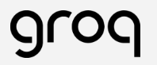
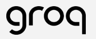
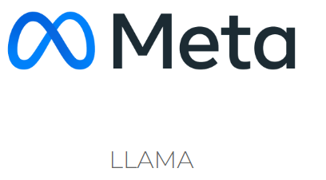
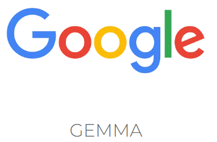
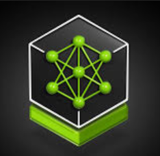

Skills
Generative AI
-

 

-



-



Innovative Generative AI Developer with deep expertise in leveraging diverse LLM models and platforms to drive advanced AI solutions. Proficient in both open-source ecosystems such as Groq, LangChain, Hugging Face, and Ollama, as well as leading commercial platforms including OpenAI, Amazon Bedrock, and Nvidia NIM. Adept at developing and optimizing generative models to address complex challenges, enhance performance, and deliver impactful AI-driven results.
As an AI Developer, I specialize in designing and implementing advanced generative AI solutions across various platforms. I work end-to-end, delivering solutions based on customer needs, either through active project execution or during pre-sales and customer onboarding discussions. My role also involves collaborating with the pre-sales team to analyze and understand customer use cases, ensuring the development of tailored AI solutions.
Apart from being an AI developer, I enjoy most of my time learning other exciting stuffs either it be a Digital Magazine , Programming Languages or Developing New Projects. Although rest is very important in life but somehow doing exciting stuff relaxes me.
Apart from learning, I follow a number of sci-fi and fantasy genre movies and television shows.
I also love to travel and to cook.